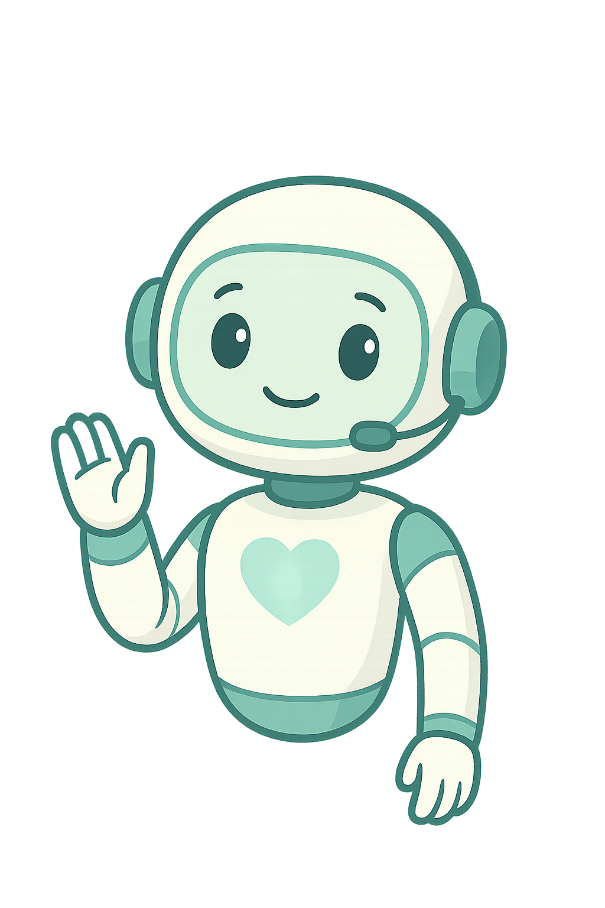

¿Qué hace VIDA?
VIDA es un asistente conversacional creado para brindar orientación empática, clara y confiable sobre la donación de órganos, tejidos y sangre en México.
Fue desarrollado como una herramienta informativa para acompañar a personas que tienen dudas, miedo o simplemente desean entender mejor cómo funciona la donación, ya sea como donadores voluntarios o como familiares que enfrentan una decisión en un momento difícil.
VIDA no sustituye atención médica ni asesoría profesional directa, pero está diseñada para ayudarte a:
- Entender qué órganos, tejidos y componentes sanguíneos se pueden donar.
- Saber quién puede ser donador y en qué momentos.
- Desmitificar ideas falsas sobre la donación.
- Reflexionar con libertad sobre el acto de donar.
- Obtener enlaces seguros y oficiales para registrarte como donador voluntario o encontrar centros de donación.
VIDA es una voz que informa sin juzgar, acompaña sin presionar, y cree que donar es un acto de amor y conciencia.
Aviso de Privacidad – VIDA
VIDA (Voz de Información y Donación Asistida) es una herramienta informativa que opera sin recopilar datos personales sensibles. No se almacenan nombres, ubicaciones, correos electrónicos ni respuestas específicas de los usuarios. Las conversaciones no son monitoreadas ni utilizadas para fines comerciales o de perfilamiento.
El uso de esta plataforma es completamente anónimo y su único propósito es ofrecer orientación general sobre procesos de donación post mortem, con base en información pública y normativa mexicana vigente.
VIDA no sustituye asesoría médica, psicológica ni legal. Si requiere atención médica o desea formalizar su voluntad de donar, debe acudir a las instancias oficiales correspondientes (CENATRA, IMSS, ISSSTE, etc.).
Para cualquier comentario, puede escribir al desarrollador del proyecto a través del formulario de contacto disponible.
Encuesta anónima de satisfacción – VIDA
Responde en menos de 1 minuto:
¡Gracias!
Tu opinión nos importa y nos ayuda a mejorar VIDA.